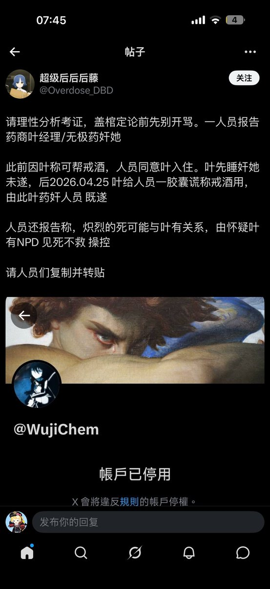

菜菜警官3.0
@nanahime1cpc
@LanwujiDrink 完全是借昨天的事件趁机开团叶经理。这种小心思一看就能看出来…不管怎么样我得再说句抱歉。

☯️🧬無極® 生物科技 葉經理
@LanwujiDrink
回应一下最近的事情
0 事情起因是我说对方Drug addict（因为当事人长期超剂量且联用酒精+PR+Z药
+BZD)
1当事人不爽叶开始和 后藤 诬告叶迷奸当事人，后藤帮助其调查
全篇 分0-8步 https://t.co/rTWtLd9sxI